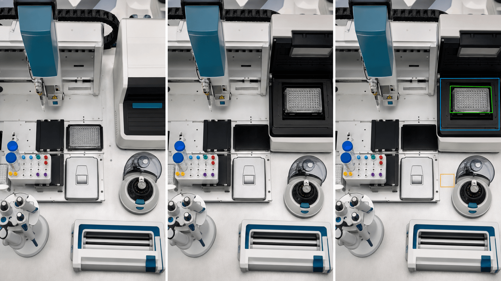

当前节点
AutoWetLab Agent | AI Agent Workflow + MCP + YOLO
湿实验自动化的安全可审计 Agent 平台
把自然语言 qPCR SOP 转换为可检索、可审计、可 dry-run、可视觉感知并由 AI 判读结果的设备任务链。
Check文档/边界/材料/设备条件检查
Gate脚本安全审计演示
AI扩增曲线与阴性对照判读
安全与执行证据
Audit Evidence
待检查可行性
待审计安全审计
0视觉证据
等待 Code Generation Agent 生成脚本...
视觉闭环
YOLO + Agent

实验前
实验后
识别后
执行前
实验台准备态，等待 dry-run 完成后采集图像。
执行后
尚未触发 YOLO 检测。
实验反馈
AI 最终分析
流程尚未运行。
关键参数待提取
观测现象待分析
分析来源等待流程推进